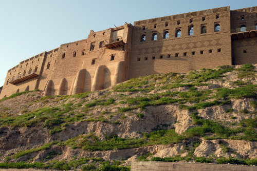
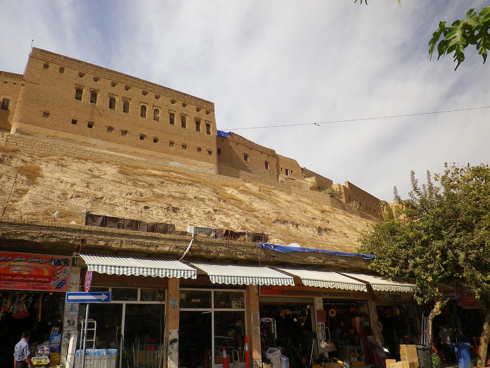
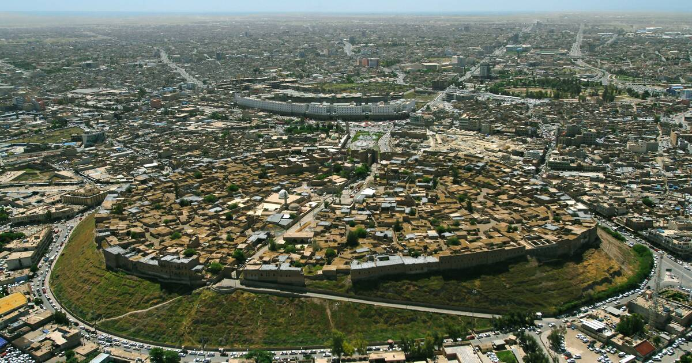

Erbil Citadel
- Erbil Citadel is a fortified settlement on top of an imposing ovoid-shaped tell (a hill created by many generations of people living and rebuilding on the same spot) in the Kurdistan region, Erbil Governorate. A continuous wall of tall 19th-century façades still conveys the visual impression of an impregnable fortress, dominating the city of Erbil. The citadel features a peculiar fan-like pattern dating back to Erbil’s late Ottoman phase. Written and iconographic historical records document the antiquity of settlement on the site Erbil corresponds to ancient Arbela, an important Assyrian political and religious centre while archaeological finds and investigations suggest that the mound conceals the levels and remains of previous settlements.

- Erbil Citadel is a rare surviving example of a formerly fortified settlement which has grown up on the top of an imposing ovoid-shaped tell. The artificial topography of the archaeological mound conditioned the urban form of the settlement, the structure of the Ottoman period urban fabric of which is clearly legible, in the maze of alleys and cul-de-sacs radiating from the main Grand Gate. The original fortifications of the Citadel were in time replaced by houses and the continuous wall of tall 19th century house façades still conveys the visual impression of an impregnable fortress dominating the city of Erbil. Written and iconographic historical records document the antiquity of settlement on the site: Erbil is associated with Arbela, an important Assyrian political and religious centre and is mentioned, with a remarkable continuity of its name (Irbilum, Urbilum, Urbel, Arbail, Arbira, Arbela, Erbil/Arbil), since pre-Sumerian times in several written sources. Archaeological finds and investigations suggest that the mound conceals the levels and remains of several layers of previous settlements, while the immediate and wider setting has revealed traces connected to the early development of the settlement.

- The earliest evidence for occupation of the citadel mound dates to the 5th millennium BC, and possibly earlier. It appears for the first time in historical sources in the Ebla tablets around 2,300 BC, and gained particular importance during the Neo-Assyrian period. During the Sassanian period and the Abbasid Caliphate, Erbil was an important centre for Christianity. After the Mongols captured the citadel in 1258, the importance of Erbil declined. During the 20th century, the urban structure was significantly modified, as a result of which a number of houses and public buildings were destroyed. In 2007, the High Commission for Erbil Citadel Revitalization (HCECR) was established to oversee the restoration of the citadel. In the same year, all inhabitants, except one family, were evicted from the citadel as part of a large restoration project. Since then, archaeological research and restoration works have been carried out at and around the tell by various international teams and in cooperation with local specialists. The government plans to have 50 families live in the citadel once it is renovated.
